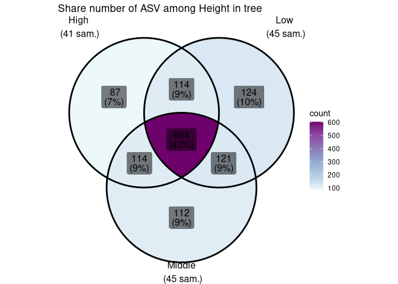

See the pkgdown documentation site here and the package paper in the Journal Of Open Softwares.
Biological studies, especially in ecology, health sciences and taxonomy, need to describe the biological composition of samples. Over the last twenty years, (i) the development of DNA sequencing, (ii) reference databases, (iii) high-throughput sequencing (HTS), and (iv) bioinformatics resources have enabled the description of biological communities through metabarcoding. Metabarcoding involves the sequencing of millions (meta-) of short regions of specific DNA (-barcoding, Valentini, Pompanon, and Taberlet (2009)) often from environmental samples (eDNA, Taberlet et al. (2012)) such as human stomach contents, lake water, soil, and air.
MiscMetabar aims to facilitate the description, transformation, exploration and reproducibility of metabarcoding analyses using R. The development of MiscMetabar relies heavily on the R packages dada2 (Callahan et al. 2016), phyloseq (McMurdie and Holmes 2013) and targets (Landau 2021).
Installation
A CRAN version of MiscMetabar is available.
install.packages("MiscMetabar")You may need to install required bioconductor packages (dada2 and phyloseq) first. See their installation pages. One other solution is to use the package pak to install MiscMetabar. It comes with the benefit to check for uninstalled dependencies on your computer (system requirements), thank you pak!
pak::pkg_install("MiscMetabar")You can also install the stable development version from GitHub with:
if (!require("devtools", quietly = TRUE)) {
install.packages("devtools")
}
devtools::install_github("adrientaudiere/MiscMetabar")You can install the unstable development version from GitHub with:
if (!require("devtools", quietly = TRUE)) {
install.packages("devtools")
}
devtools::install_github("adrientaudiere/MiscMetabar", ref = "dev")Some use of MiscMetabar
See articles in the MiscMetabar website for more examples.
For an introduction to metabarcoding in R, see the state of the field article. The import, export and tracking article explains how to import and export phyloseq objects. It also shows how to summarize useful information (number of sequences, samples and clusters) across bioinformatic pipelines. The article explore data takes a closer look at different ways to explore samples and taxonomic data from phyloseq object.
If you are interested in ecological metrics, see the articles describing alpha-diversity and beta-diversity analysis. The article filter taxa and samples describes some data filtering processes using MiscMetabar and the reclustering tutorial introduces the different way of clustering already-clustered OTU/ASV. The article tengeler explore the dataset from Tengeler et al. (2020) using some MiscMetabar functions.
For developers, I also wrote an article describing some rules of codes.
Summarize a physeq object
library("MiscMetabar")
library("phyloseq")
library("magrittr")
data("data_fungi")
summary_plot_pq(data_fungi)
Alpha-diversity analysis
p <- MiscMetabar::hill_pq(data_fungi, fact = "Height")
p$plot_Hill_0
#> NULL
p$plot_tuckey
#> NULLBeta-diversity analysis
if (!require("ggVennDiagram", quietly = TRUE)) {
install.packages("ggVennDiagram")
}
ggvenn_pq(data_fungi, fact = "Height") +
ggplot2::scale_fill_distiller(palette = "BuPu", direction = 1) +
labs(title = "Share number of ASV among Height in tree")
Note for non-Linux users
Some functions may not work on Windows (e.g. track_wkflow(), cutadapt_remove_primers(), krona(), vsearch_clustering(), …). A solution is to exploit docker container, for example the using the great rocker project.
Here is a list of functions with some limitations or not working at all on Windows OS:
build_phytree_pq()count_seq()cutadapt_remove_primers()krona()merge_krona()multipatt_pq()plot_tsne_pq()rotl_pq()save_pq()tax_datatable()track_wkflow()track_wkflow_samples()tsne_pq()venn_pq()
MiscMetabar is developed under Linux and the vast majority of functions may works on Unix system, but its functionning is not tested under iOS.
Installation of other softwares for Debian Linux distributions
If you encounter any errors or have any questions about the installation of these softwares, please visit their dedicated websites.
swarm
An other possibilities is to install swarm with conda.